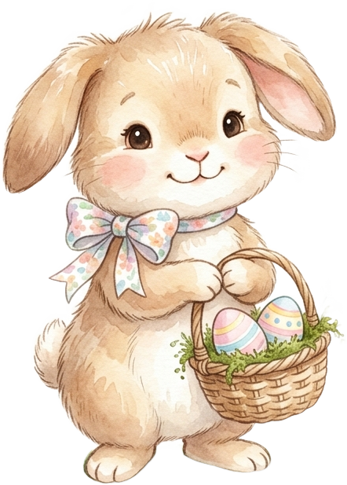
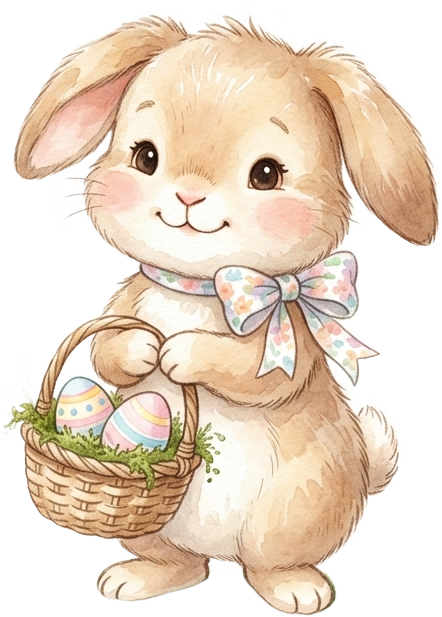

Printable kit · Ages 3 to 8 · Easter
Kindness
Bunny Kit
A little bunny hops in with one kind mission a day for the 14 days before Easter. Kindness instead of more candy, five minutes a morning.
18 pages · US Letter + A4
For grown-ups
How the Kindness Bunny works
For the 14 days before Easter, your child finds a note from the Kindness Bunny with one small, kind thing to do. After each one, color an egg on the tracker. On Easter morning, the bunny leaves a goodbye letter.
1
Meet your bunnyAny soft toy or a paper bunny can be your Kindness Bunny. Fill in the bunny passport together.
2
Print and cutPrint the notes and cut them apart (4 per page). Keep them in an envelope or a little basket.
3
One note a dayLeave a note out each evening, read it together in the morning.
4
CelebrateColor an egg on the tracker. On Easter, read the goodbye letter and give the "I was kind" certificate.
Forgot a note?
Use the lifesaver letters: "I hopped too far" and "I was painting eggs".
Make it yours
Use the 4 egg hunt clue cards for a kindness egg hunt on Easter morning.
Hello, little friend!
Hop, hop! I'm a little Kindness Bunny, and I've come to help you get ready for Easter.
For the next 14 days, I'll leave you one kind mission every morning. Every kind thing you do makes my eggs a little more colorful.
Let's make this the kindest spring ever!
Love, your Kindness Bunny
Color one egg a day
My kindness tracker
After each kind mission, color one egg circle. Fill all 14 before Easter!
I hopped too far!
Good morning! I hopped so far through the meadow that I got back late.
Today's kind mission: help someone who is in a hurry. See you tomorrow!
Love, your Kindness Bunny
I was painting eggs!
I painted eggs all night and forgot your note!
Today's kind mission: make something colorful for someone you love. Back tomorrow!
Love, your Kindness Bunny
Halfway to Easter!
Seven kind missions done! The meadow is full of colorful eggs thanks to you.
Keep going, little friend!
Love, your Kindness Bunny
Bonus
Kindness egg hunt clues
Hide a little treat or a kind note and use these clue cards on Easter morning.
EGG HUNT CLUE
Look where we brush our teeth
hide a kind note or a treat here
EGG HUNT CLUE
Look where the books sleep
hide a kind note or a treat here
EGG HUNT CLUE
Look under something soft
hide a kind note or a treat here
EGG HUNT CLUE
Look where we eat breakfast
hide a kind note or a treat here
Write your own clues on the blank notes for older kids.

Happy Easter!
Today I hop back to the meadow with a basket full of your kindness.
Thank you for every hug, every smile and every kind thing you did.
Keep being kind all year long!
Love forever, your Kindness Bunny
Official meadow award
I Was Kind!
This certificate goes to
for 14 days of kindness. Every bunny is proud of you!
Date ____________ Signed: Your Kindness Bunny
For grown-ups
30 more tiny kindness ideas
Swap in any of these when a note doesn't fit your day. Keep missions short, concrete and done together.
- Hold the door for someone
- Say “I love you” at breakfast
- Give your sibling the first turn
- Say “please” at every meal
- Bring a grown-up a glass of water
- Help feed the pet
- Make a get-well drawing
- Call a grandparent and say “I love you”
- Give a compliment: “I like your drawing!”
- Help fold the towels
- Put a toy back for someone else
- Comfort a sad friend
- Help carry the laundry basket
- Wash plastic cups in the sink
- Share your snack
- Help make breakfast toast
- Give the plants a drink
- Clean up crayons without being asked
- Say “sorry” and hug
- Wave at a neighbor’s window
- Make a bracelet for a friend
- Help match the socks
- Let someone else choose the song
- Brush the dog or the teddy
- Write a love note to a parent
- Give a good-night hug to everyone
- Plant flower seeds together
- Make a bird feeder
- Pick a flower for someone (with permission)
- Clean up the garden toys
Pair it with
Our Kindness Cupid (February) and Kindness Leprechaun (March) kits follow the same 5-minute idea. Find them in our shop.